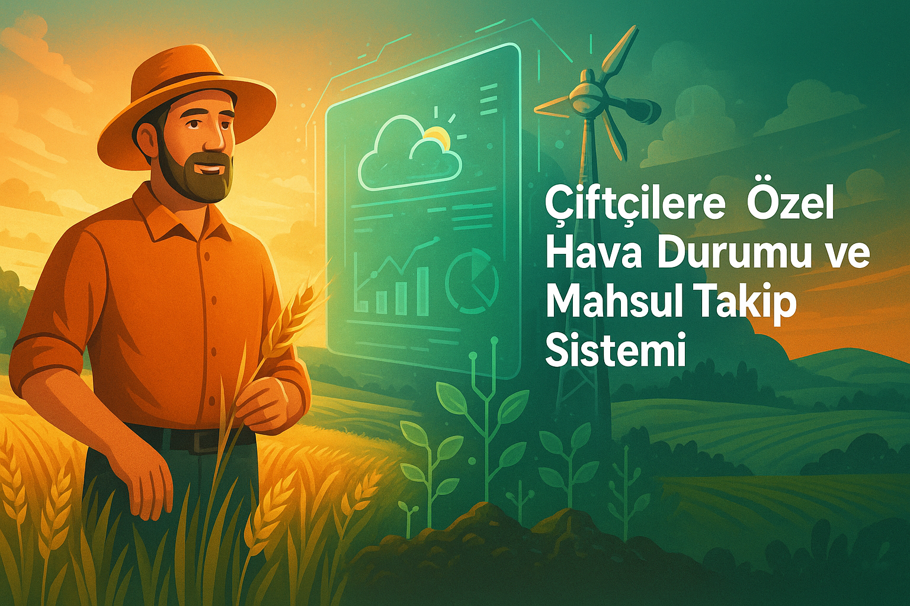

🌿 Tarımda Dijital Dönüşüm Başlıyor!
Mahsul takibi, anlık hava durumu analizi, sulama zamanlarının takibi, hastalık uyarı sistemleri ve daha fazlası artık tek bir dijital platformda. Çiftçilere Özel Hava Durumu ve Mahsul Takip Sistemi ile tarlanızın ihtiyacını önceden bilin, doğru zamanda doğru adımları atın. Hem verimliliği artırın hem de maliyetlerinizi düşürün. Siz de bu dijital tarım devrimine katılın, geleceğin çiftçisi olun! Hemen kaydolun ve avantajları keşfedin.
Hemen Kayıt Ol